Count the rings. That’s us.
Cut a longleaf pine in Angelina County and you can read its life in the rings: the wet years, the dry years, the fires it lived through. Deep East Texas reads the same way. Every ring below is a chapter, oldest at the heart. Tap one to jump to it.
Before Texas was Texas, it was Caddo country
Around the year 800, Caddo people chose a bluff above the Neches River, about 26 miles west of where Nacogdoches sits now, and built a permanent village and ceremonial center. Three earthen mounds still rise out of the pines there today, at Caddo Mounds State Historic Site near Alto.
Here’s the part most folks don’t know: the name of this whole state came out of these woods. The Caddo word táyshaʼ meant “friend” or “ally.” The Spanish wrote it down as Tejas. That’s why the state motto is one word: Friendship.
Sources: Texas Historical Commission, Caddo Mounds history (settled about A.D. 800); Texas Time Travel (THC) (26 miles west of Nacogdoches); Texas Beyond History, “Caddo Homeland” (taysha, friend or ally); TSHA Handbook of Texas, “Texas, Origin of Name” and the state motto entry.The King’s Road comes through
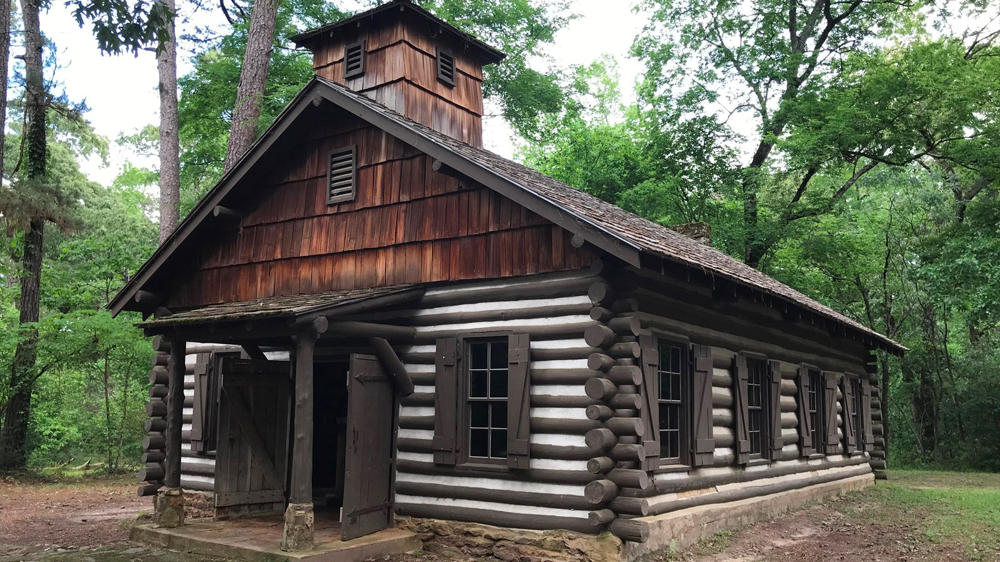
In 1690 the Spanish built Mission San Francisco de los Tejas in a Caddo village near present-day Weches. It was the first mission in the province of Texas, and it didn’t last: by 1693 the friars had burned it and left. Smallpox struck in the winter of 1690 and killed almost 3,300 people in the area around the mission.
The road they traveled, El Camino Real de los Tejas, is still out there. You can walk real wagon-worn stretches of it at Mission Tejas State Park and at Caddo Mounds. Texas Highway 21 follows much of the old route.
Sources: Texas Parks and Wildlife, Mission Tejas history (1690, first mission in the province; Hwy 21); Texas Historical Commission marker 7013; National Park Service, Mission Tejas State Park (smallpox, almost 3,300 deaths, winter 1690; mission burned and abandoned Oct. 6, 1693).1779: a town walks home
In 1773 Spain ordered its settlers out of East Texas. They didn’t stay gone. Antonio Gil Y’Barbo led them back, and in 1779 they rebuilt Nacogdoches on the old mission site. That’s why Nacogdoches calls itself the oldest town in Texas.
Sources: SNAC record, Antonio Gil Y’Barbo papers (SFA East Texas Research Center and UT Libraries); National Register nomination, Nacogdoches.Rails, sawdust and a brand-new town
Lufkin didn’t exist until the Houston, East and West Texas Railway laid track through here in 1882. Lots went up for sale on Sept. 12 that year. The town was named for Abraham P. Lufkin, a Galveston cotton merchant.
Then came the timber boom. In 1894 Temple built a sawmill on the same rail line and founded Diboll as a company town. Some mills moved whole communities from forest to forest as they cut. By the 1930s, a lot of the Piney Woods had been cut to the stump.
Sources: Texas Senate Resolution 52 (2003) (founded 1882, named for Capt. Abraham P. Lufkin); Lufkin Daily News (Sept. 12, 1882 lot sale); Lufkin Daily News (Diboll, 1894); The History Center, Diboll, Centennial Preserves (1982) (mills moving whole communities).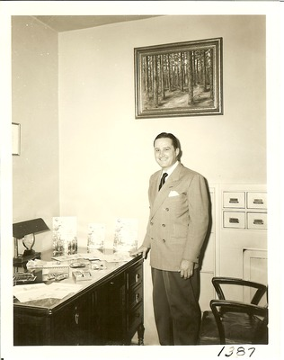
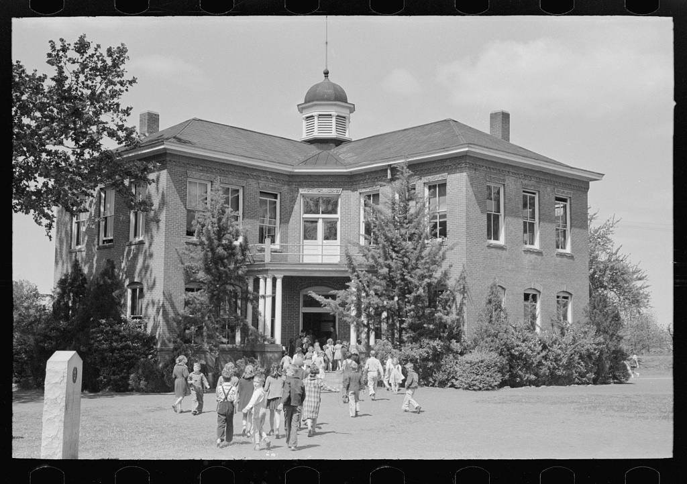
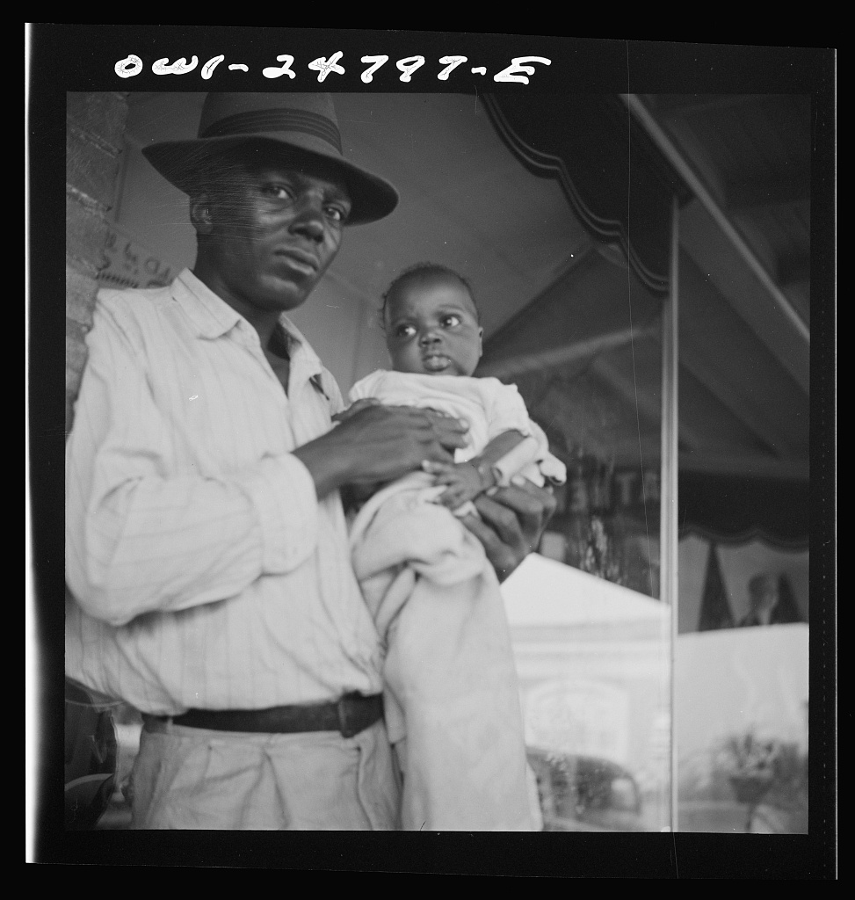
Cutover land gets a second chance
In 1933 the Texas Legislature let the federal government buy up cutover timberland and worn-out farms. In 1936 President Franklin Roosevelt made four of them national forests: the Angelina, the Davy Crockett, the Sabine and the Sam Houston. The pines you drive through on the way to Sam Rayburn grew back on land that was once stumps.
Sources: Texas Historical Commission marker, “U.S. Forest Service in Texas” (1933 authorization, cutover land); National Forest Foundation (1936 designation by Roosevelt); Forest History Society, Weeks Act chronology (all four, 1936).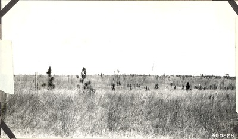
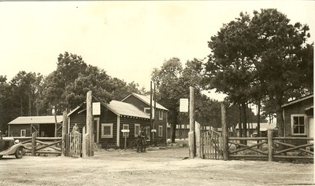
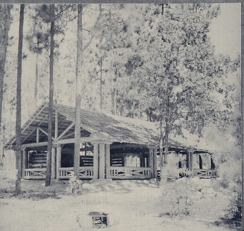
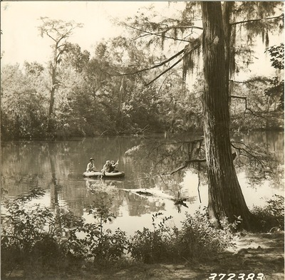
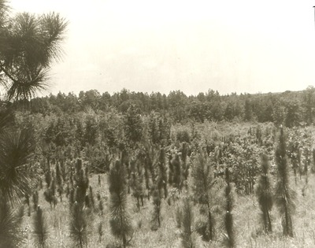
The mill, and the water under it
Southland Paper Mills opened east of Lufkin in 1940 and became the biggest water user in Angelina County. The state watched our aquifer drop hundreds of feet while it pumped. We tell that whole story, with the state’s own numbers, on its own page.
East Texans saved the Big Thicket
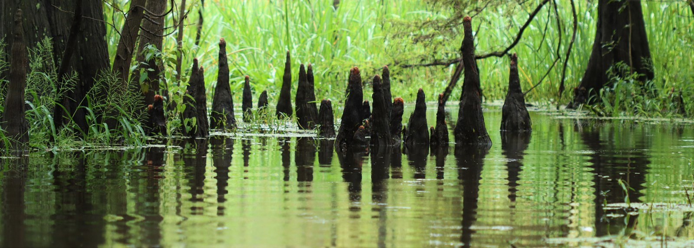
On Oct. 11, 1974, President Gerald Ford signed the law creating Big Thicket National Preserve, one of the first two national preserves in the country. It didn’t happen because Washington noticed. It happened because local people, starting with a meeting at the Saratoga Methodist Church in 1964, spent ten years refusing to quit.
UNESCO now calls the Big Thicket a biosphere reserve. Carnivorous plants, cypress sloughs and American beech at the edge of its range, all a couple of hours down the road.
Sources: National Park Service, 50th anniversary (Public Law 93-439, Oct. 11, 1974); NPS, “What is the Big Thicket?”; Big Thicket Reporter #121 (1964 Saratoga meeting); Wikipedia (UNESCO biosphere reserve).People have called this place home for a long time. The Alabama and Coushatta tribes settled in the Big Thicket in the 1780s, and the Alabama-Coushatta Tribe of Texas’s reservation sits right next to the preserve today. Homesteaders who did settle the thicket raised hogs and hunted with dogs.
Source: NPS, “What is the Big Thicket?”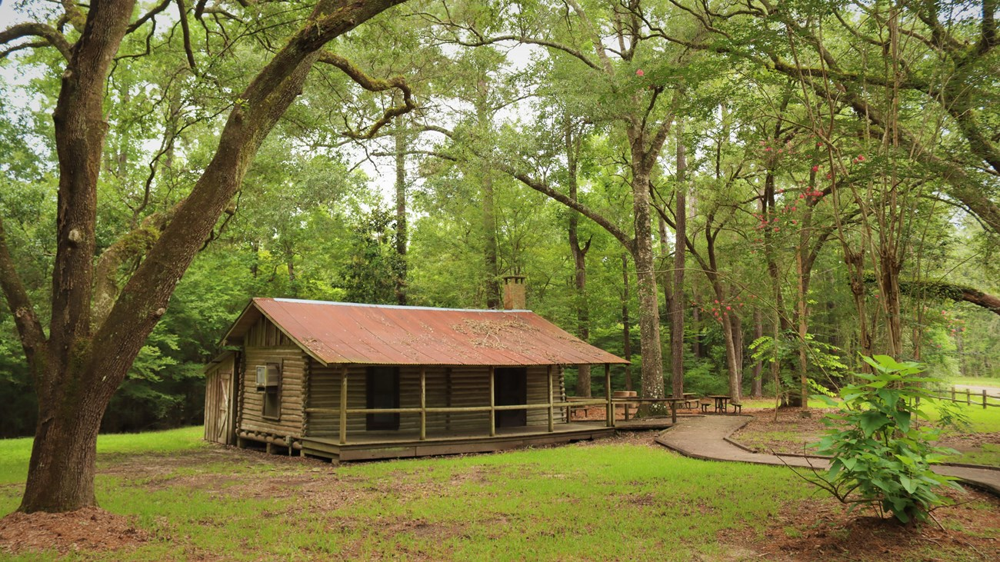
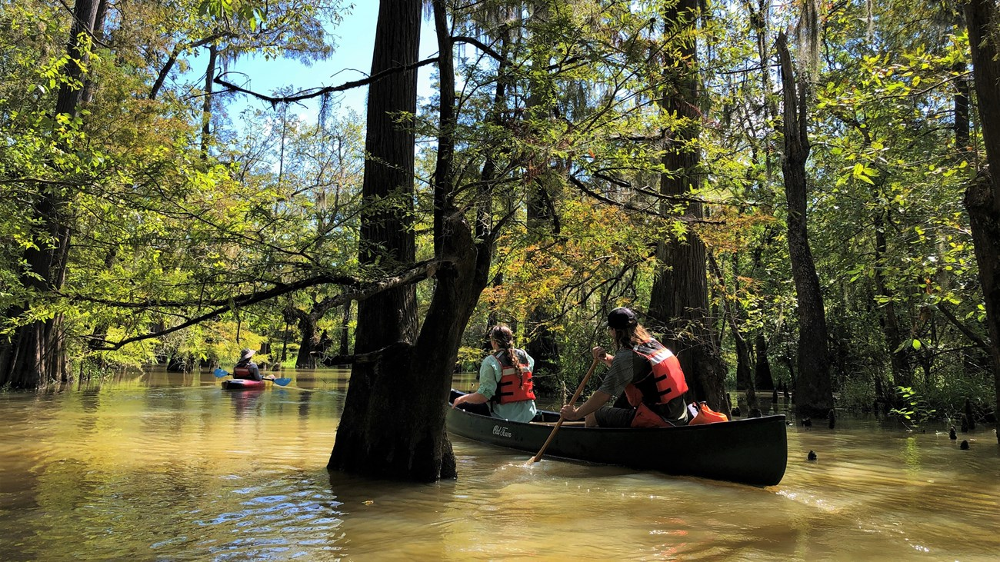
The next ring is ours to write
Every ring in that tree was laid down by somebody who decided this place was worth keeping: the Caddo who named it, the families who walked home to Nacogdoches, the folks who replanted the cutover and fought for the Thicket. The water under our feet is the next fight, and it’s the same kind of fight.
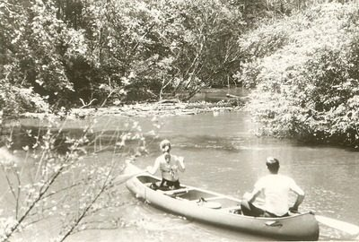
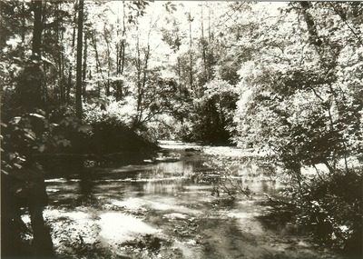
Got a photo of your people?
Old family pictures of sawmill camps, church homecomings, mayhaw picking or the Neches? Send them to contact@grailsystems.io with who’s in it, where and roughly when. We’ll ask before we post anything, and we’ll credit your family.